Voorstel · ronde 3
Lettertype voor boordcomputer en webapp
Alle voorbeelden zijn gemaakt met dezelfde letterdata die op de boordcomputer en in de webapp komt. Bovenaan staan ze groot onder elkaar; de naam staat steeds in het rood achter de tekst. Daaronder per stijl de proefregels en twee echte schermen.
Vergelijking
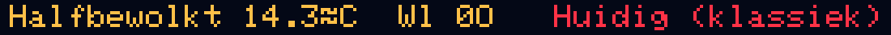
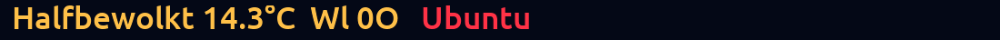
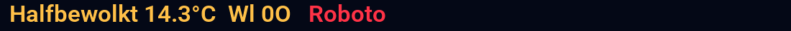
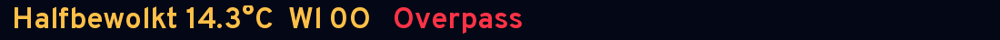
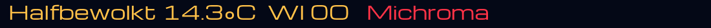
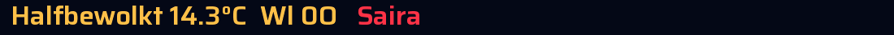
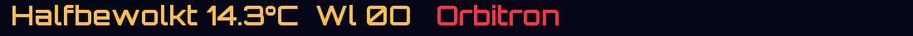
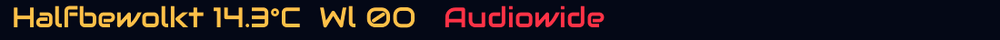
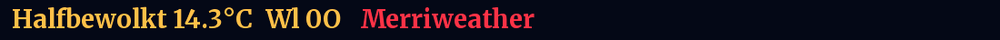
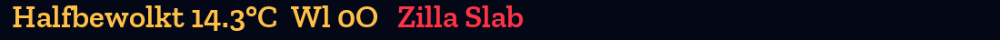
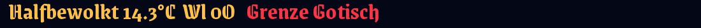
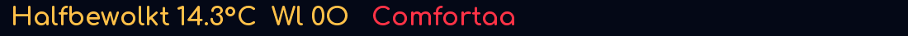
Goed leesbaar
Rustige letters voor dagelijks gebruik, ook van een afstand en in de zon.
B612
OFL · AirbusDoor Airbus ontworpen voor cockpitschermen. Kleine l met staartje.
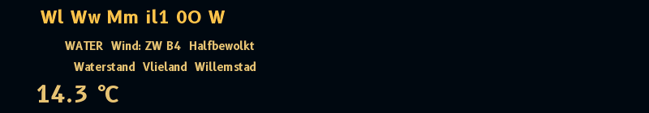
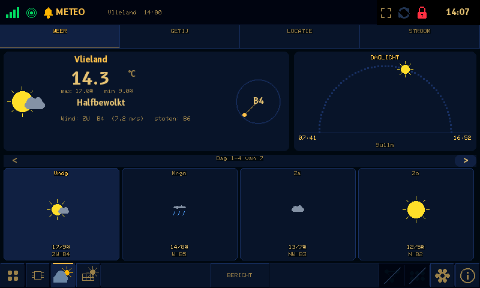
Atkinson Hyperlegible
OFLGemaakt voor slechtziende lezers. Kleine l met staartje, nul met streep.
Fira Sans
OFLVriendelijk en stevig. Kleine l met staartje.
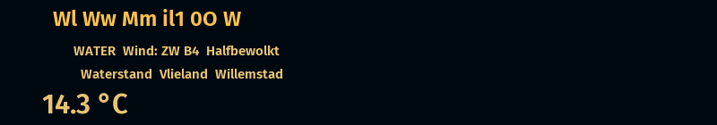
Ubuntu
UFLRond, met een gebogen staartje aan de l.
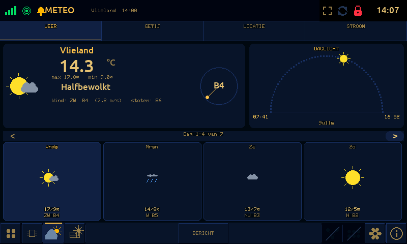
Lexend
OFLBreed en ontworpen voor leesgemak.
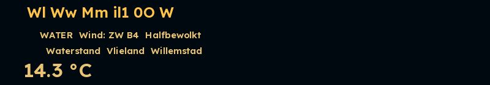
Roboto
OFLHet bekende Android-lettertype.
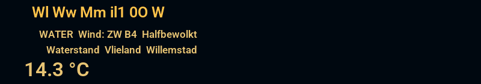
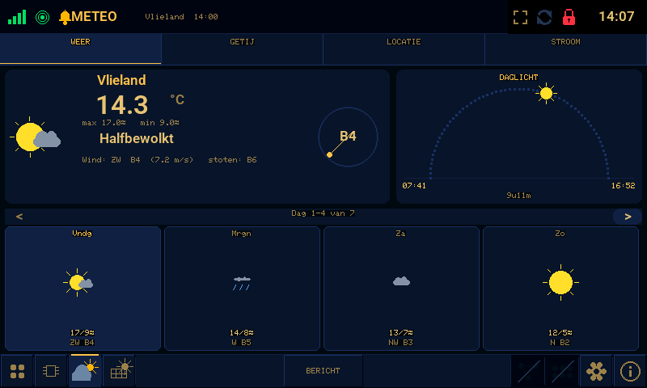
Source Sans 3
OFLRustig en wat smaller.
Overpass
OFLAfgeleid van de Amerikaanse verkeersborden-letter.
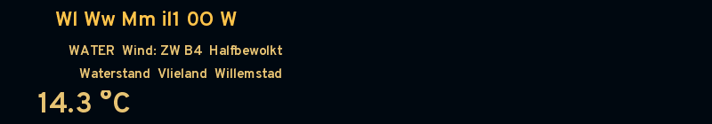
Zoals de belettering van je boot
Lettertypen in de stijl van Eurostile: strak, rechthoekig en simpel. Eurostile zelf is commercieel en mag niet meegeleverd worden; deze vrije lettertypen lijken er sterk op.
Michroma
OFLHet dichtst bij Eurostile Extended: breed en strak.
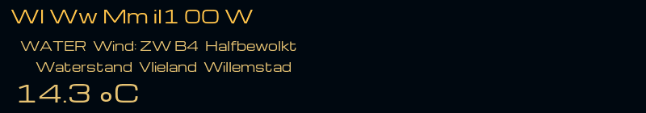
Saira
OFLEurostile-achtig, maar normaal van breedte en goed leesbaar.
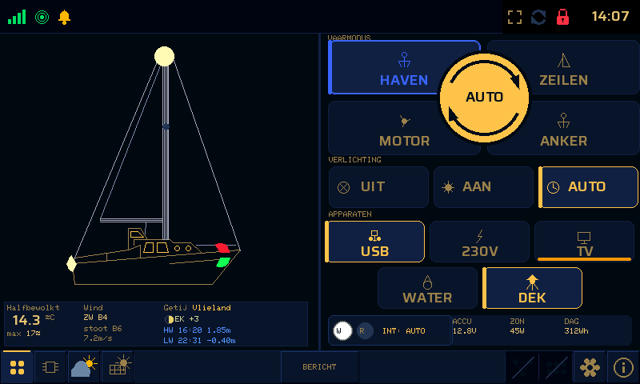
Orbitron
OFLNog hoekiger en futuristischer.
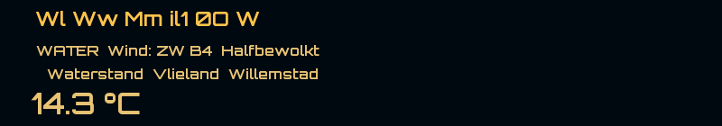
Audiowide
OFLAfgerond en vlot, met een wat sportieve uitstraling.
Klassiek
Lettertypen met schreefjes, zoals in boeken en kranten.
Merriweather
OFLKlassieke boekletter, speciaal gemaakt voor schermen.
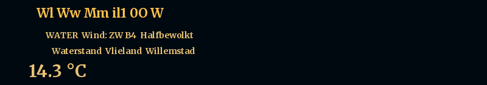
EB Garamond
OFLEeuwenoude klassieker, sierlijk en verfijnd.
Zilla Slab
OFLBlokschreef: klassiek maar stevig.
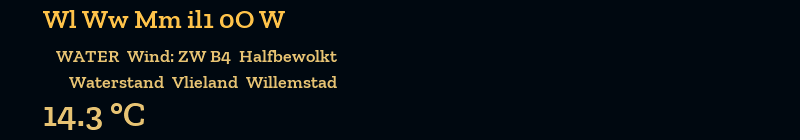
Sierlijk
Handschrift-achtige letters. Mooi voor titels, lastiger voor kleine tekst.
Dancing Script
OFLVrolijk, vloeiend handschrift.
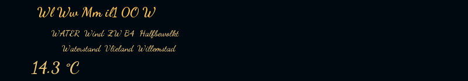
Great Vibes
OFLZeer sierlijk; op dit formaat eigenlijk te fijn.
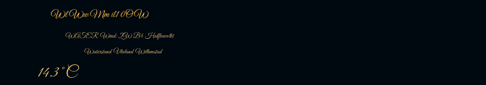
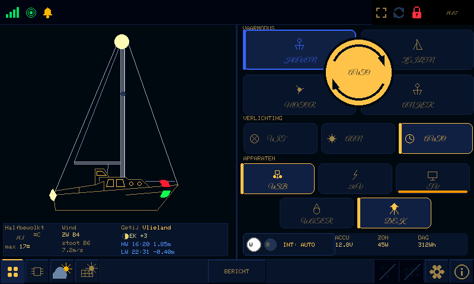
Gotisch
Breekletters zoals op oude oorkondes en bierflessen.
Pirata One
OFLGotisch, maar nog goed te lezen.
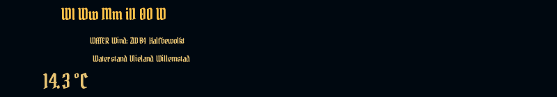
Grenze Gotisch
OFLGotisch met een moderne, vette uitvoering.
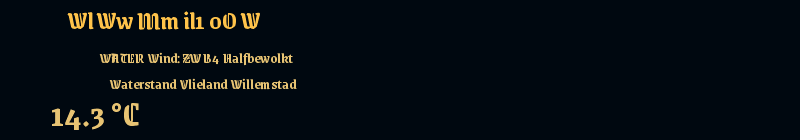
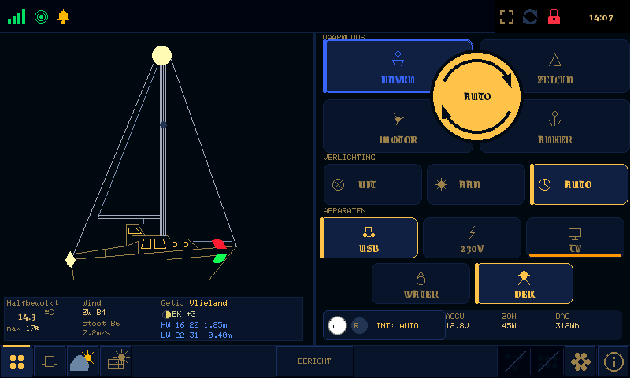
UnifrakturMaguntia
OFLEchte fraktur, zoals oude Duitse drukwerken.
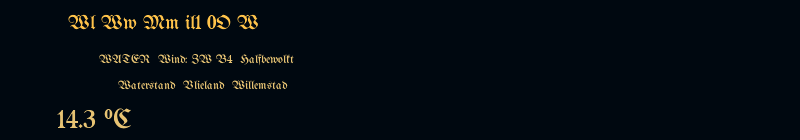
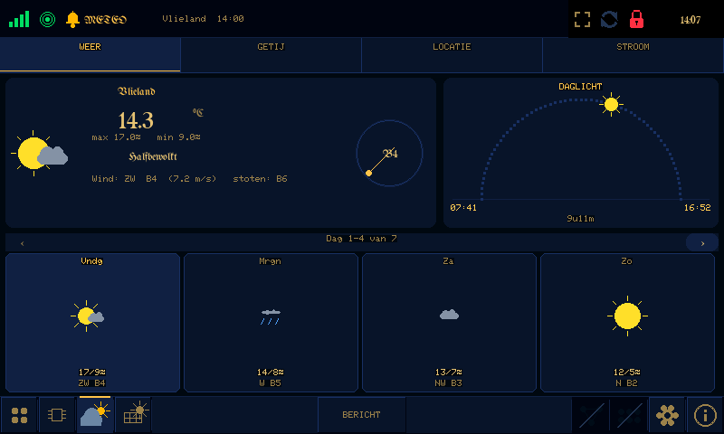
Anders
Nog twee totaal andere richtingen.
Comfortaa
OFLRond en zacht, met dunne lijnen.
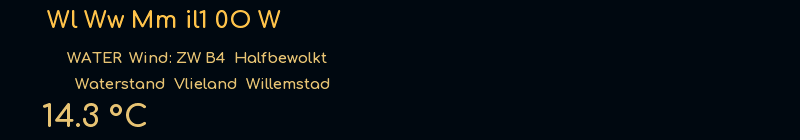
Oswald
OFLSmal en hoog, zoals een krantenkop.
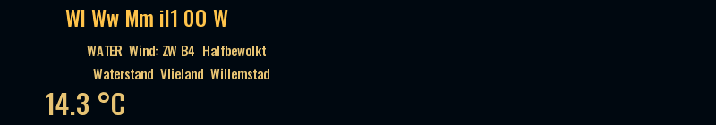